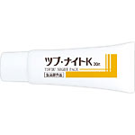
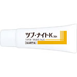

商品の特徴
目元・首元にできる頑固なポツポツ角質粒を「薬用パック」で封じ込めて徹底ケア！頑固な角質粒にしっかり浸透するパックタイプの濃密クリームがお休み中にじんわり広がります。
- 成分・分量
- ＜有効成分＞
水溶性プラセンタエキス、グリチルリチン酸2K
＜その他の成分＞
キョウニンエキス、ヨクイニンエキス、水溶性コラーゲン液（魚起源）、藍水抽出液、クエン酸、クエン酸ナトリウム、グリセリン、クワエキス、アーティチョークエキス、アロエエキス（2）、エタノール、水ナス果実エキス、ケイ酸Al・Mg、ジエチレントリアミン五酢酸五ナトリウム液、シコンエキス、チンピエキス、ヒアルロン酸ナトリウム（2）、フェノキシエタノール、カオリン、キサンタンガム、ペンチレングリコール、BG、ポリオキシブチレンポリオキシエチレンポリオキシプロピレングリセリルエーテル（8E．O．）（5P．O．）（3B．O．）、ポリビニルアルコール、ポリビニルピロリドン、プルーン酵素分解物、ポリエチレングリコール1500、黄酸化鉄、ベンガラ
- 用法及び用量
- ＜使用方法＞
洗顔後、肌を清浄にした後、肌の水気を拭き取ってから適量を手にとり、気になる部分に均一に塗って下さい。パックが完全に乾いたら（10～20分程度）、ゆっくりはがしてください。
＜内容量＞30ｇ
 
